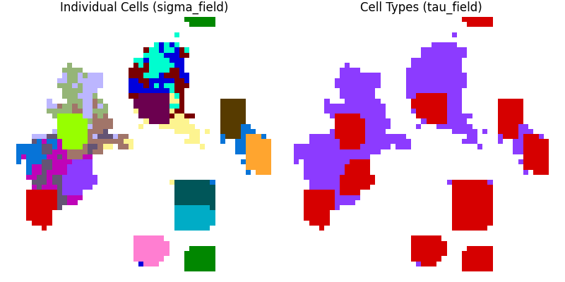
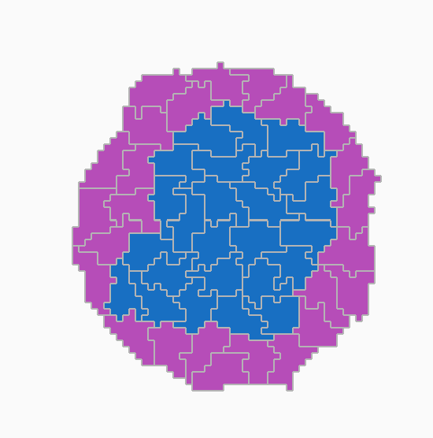
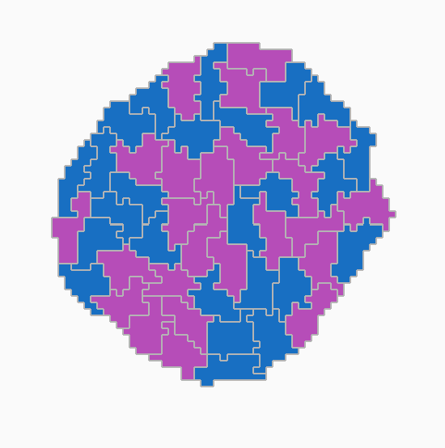
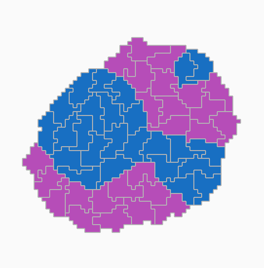
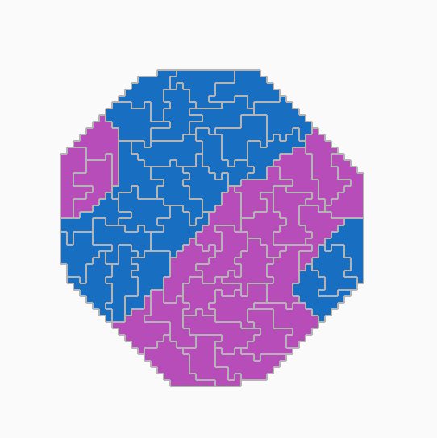
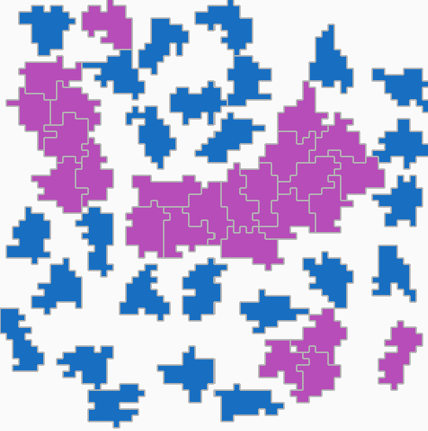
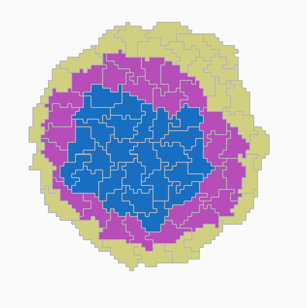

6 Cell sorting by differential adhesion
6.1 Morphogenesis
Morphogenesis is the culmination of gene expression, biochemical signaling, and biophysical forces at the cell and tissue levels. These processes are complex and not completely understood, so we don’t yet have a “perfect” model of how we should simulate morphogenesis. For this reason, several research groups independently developed simulation approaches that fit their needs. In this practical, you will get acquainted with one such approach, the cellular Potts model.
6.2 Biological background
Classical experiments in the 1950s dissociated animal embryonic tissues and recombined them in vitro to try to understand the principles of self-organization. Instead of staying mixed, each cell type sorts out into its own region, resembling the organization in the embryo.

According to the “differential adhesion hypothesis”, unlike expression levels of cell-cell adhesion molecules is the mechanistic driver of cell sorting. Biophysically, cells form aggregates that minimize the contact energy at interfaces, rearranging into the most thermodynamically stable pattern. In 1992, the cellular Potts model was developed to test this hypothesis using simulations (Graner and Glazier (1992)).
6.3 The cellular Potts / Glazier-Graner-Hogeweg model
The cellular Potts Model (CPM), also known as Glazier-Graner-Hogeweg (GGH) model after its major developers and popularizers, simulates stochastic dynamics of cell shapes on a grid (=a lattice). The model has its historical roots in physical models of magnetization of metals and formation of foam bubbles, so some of the terminology harkens back to that. Each grid site on the lattice has a spin value σ (Greek small letter sigma), usually an integer number. A biological cell is represented by all lattice sites with equal value σ.

Cell shapes change by elementary changes called copy attempts, where one site of the lattice (the source site xS) attempts to copy its σ value to a neighboring lattice site (the target site xT). Copy attempts can succeed (be accepted) or fail (be rejected).

Choosing and accepting copy attempts occurs via a stochastic Monte Carlo method. More specifically, a modified Metropolis-Hastings algorithm, which is an algorithm that minimizes an energy function H calculated based on the lattice configuration. The probability that a copy attempt is accepted P(accept) depends on the change in energy ΔH between the configuration before and after a copy attempt:

In the above equation, T is a parameter that determines how likely it is that an unfavorable copy attempt that increases the energy is accepted, while H0 is a parameter representing the yield, that is, how easily the cell membrane changes shape (often, this parameter is set to H0 = 0). What this equation says is: Configurational changes that lower the energy below at least H0 are always accepted (probability of 1), while configurational changes that increase the energy are accepted with a probability that decreases exponentially with the energy cost. In a biological sense, cells consume energy from ATP to create configurations that are physically unfavorable (ΔH ≥ -H0). Therefore, the parameter T can be interpreted as intrinsic cell activity.
6.4 Exercises
Exercise 6.1 (Algorithmic thinking - Anatomy of a cellular Potts model) A minimal cellular Potts model simulation of cell sorting contains the following ingredients:
- definition of the “sigma field”
- definition of the “tau field”
- the initial condition of sigma and tau fields
- the neighborhood of a grid site
- a Monte Carlo stepping procedure
- definition and calculation of the energy function H
Study the code provided in the script 01_cpm.py. Then, answer the following questions:
- Which functions in the script correspond to the above ingredients?
- What is the default initial condition?
- What is the default neighborhood?
- Run the script and observe the plots that appear. Explain in your own words what is the sigma field and what is the tau field. Do you understand why two different fields are needed?
Answer Both the sigma and tau fields are defined in the function
initialize. This is also where the initial conditions for these fields are set. Different modes of initialization can be selected by changing the value of the variableinit_modethat is passed in the dictionary of simulation parameters.The neighborhood of a grid site is defined in the function
get_neighborhood. This function specifies which neighboring sites will be considered for all calculations that involve neighboring sites. The type of neighborhood (e.g., Von Neumann or Moore) can be selected by changing the value of the variableneighborhoodin the dictionary of simulation parameters.The Monte Carlo stepping procedure is defined in the function
monte_carlo_step. This function implements the core logic of the Monte Carlo algorithm, including selecting random sites, proposing changes, and accepting or rejecting those changes based on energy calculations.The definition and calculation of the energy function H is implemented in different functions:
get_dH_adhesionandget_dH_volumecalculate contributions of individual terms and are then summed together in the functioncalc_dH, which is called bymonte_carlo_step.Running the code generates a plot with two subplots. The left one shows cells colored with a unique color according to their sigma value. The right subplot shows the tau field, where different cell types are colored differently according to their tau value.
 Figure: Final state of a simulation run.
Figure: Final state of a simulation run.
Exercise 6.2 (Conceptual thinking - Interpreting the Hamiltonian energy function) The Hamiltonian energy function H is at the heart of a CPM/GGH simulation. H reflects our assumptions about the system and how forces affect the cell (the derivative of energy with respect to position is force).
In the script 01_cpm.py, the following Hamiltonian is used.

where J is a symmetric matrix of interfacial energies for all cell type pairs τ (small Greek letter tau), A(σ) is the area sum of lattice sites belonging to spin σ, A0,τ(σ) is the “target” area of the corresponding cell type τ, and λA(τ(σ)) is a weighting factor that scales the importance of this term (also known as Lagrange multiplier). Each term represents a constraint.
Perhaps a more intuitive way to understand the terms is the following pseudo-code:

Compare the pseudo-code to the implementation in the script. Then answer the following questions:
- What are the biological processes modeled with this specific energy function?
- Take a closer look at the summation terms. Over which domain is the first sum calculated? What about the second summation term?
Answer The first Hamiltonian term corresponds to the function
get_dH_adhesionand the second Hamiltonian term corresponds to the functionget_dH_volume. The biological process calculated byget_dH_adhesionis the energy from cell-cell and cell-medium contacts. The energy of cell-cell contacts depends on the expression levels and the types of cell-cell adhesion molecules such as cadherins. The interfacial energy of cell-medium contacts depends on the expression levels and types of cell-matrix adhesion molecules such as integrins.The biological process calculated by
get_dH_volumeis the effect of a combination of internal pressure and cytoskeletal tension that maintains the cell’s volume close to a homeostatic (target) volume.The first Hamiltonian term sums over neighbours of the selected target site. The second Hamiltonian term sums over lattice sites of the sigma values that correspond to the target and the source sites.
Exercise 6.3 (Conceptual thinking - How parameters affect the Hamiltonian energy function) The modified Metropolis algorithm used in the Monte Carlo stepping procedure ensures that over time, on average, the sum of the energy of the entire sigma field will reach a minimum. However, the different Hamiltonian terms may work “against” each other: minimizing one term may lead to maximizing the value of the other term.
Let’s vary the parameters that affect the Hamiltonian terms to get an intuition for how they work. In the following, you may want to take screenshots of the final simulation state to put in your notes, so that it’s easier to compare the outputs.
- Change the default neighborhood to
“8”and run the simulation again. What happens? - Keep the neighborhood at
“8”, and increase the parameter for“volume_weight”from[1, 1]to[2, 1]. Then, run the simulation again. What happens? - Change the initialization mode (
“init_mode”) from“random_pixel”to“square_grid”, and reset the parameter“volume_weight”to[1, 1]. What happens now if you simulate? - Explain why these settings and parameters that you just changed affect the simulation outcome.
Answer
Reference simulation with default parameters Using default parameters, the simulation results in a small group of cells that adhere to each other and maintain their target volume.

Figure: Simulation using default parameters.
Changing neighborhood from “4” to “8” Increasing the neighborhood from “4” to “8” causes most cells to disappear. In most simulations there are no cells left at all.
{kind=link}
Figure: Simulation with neighborhood changed to “8”
Changing neighborhood from “4” to “8” and increasing “volume_weight” from [1, 1] to [2, 1] Again many cells disappear. The cells that remain tend to be of tau type 1 (corresponding to the red color).
{kind=link}
Figure: Simulation with neighborhood changed to “8” and volume weight changed to [2, 1].
Changing neighborhood from “4” to “8” and initialization mode from “random_pixel” to “square_grid”
With these changes, the cells are more likely to remain present throughout the simulation, regardless of their type.
{kind=link}
Explanation of the observed effects
Changing the neighborhood from “4” to “8” increases the number of neighboring sites considered for the first term (the adhesion energy) of the Hamiltonian energy calculation, which sums over the neighbors of the target site. This can lead to a higher likelihood of unfavorable interactions, causing cells to disappear if they start from a 1-pixel size, especially since adhesion to the medium is costly according to the default parameter set.
Changing the volume weight for tau type 1 cells from 1 to 2 increases the penalty for deviating from the target volume for these cells. This increases the contribution of the second term (the volume energy) of the Hamiltonian energy calculation. Thus, it makes it energetically less favorable for them to be copied into when they are small (1-pixel sized), leading to a lower chance of disappearance. In other words, the second term is now offsetting the effect of the first term more strongly for cells of tau type 1.
In the “random_pixel” mode, cells start as single pixels scattered randomly, making them highly susceptible to disappearance due to unfavorable cell-medium interactions. In the “square_grid” initialization mode, cells start off as a 9-pixel square in relative close proximity to other cells. With a few lucky copy attempts, they can get in contact with other cells, which has a more favorable adhesion energy compared to being in contact with the medium. This and the fact that they start out with a larger area, prevents cells from shrinking away immediately.
Exercise 6.4 (Algorithmic thinking - The Monte Carlo update algorithm) In addition to showing a visualization of the σ and τ fields, the script 01_cpm.py also prints some information to the terminal.
Reset all parameters to their default values, then, based on the printed information, answer the following questions:
- How many copy attempts are made in total in one Monte Carlo Step?
- How many of these copy attempts are accepted on average?
- Calculate the average for 5 Monte Carlo Steps across 3 simulation runs.
- How many seconds does it take to run one simulation?
- Calculate the average run time for 3 runs.
The script 01_cpm.py uses the traditional update algorithm. In this algorithm, every copy attempt picks a target site randomly among all lattice sites, then subsequently picks a source site randomly among the neighbors of the target site. This leads to many invalid lattice pairs that are always rejected. The edge list algorithm is a clever way of speeding up this procedure by restricting copy attempts only to those interfaces where there is a possibility of acceptance.

The script 02_cpm_edgelist.py implements the edge list algorithm. It’s quite complicated, so don’t worry about understanding all the technical details. Using this script, answer the above questions again and compare to the results you got with the traditional update algorithm.
Explain: Why does the edgelist algorithm reduce computation time? In which situations would you expect the difference in computation time between algorithms to be large?
Answer Each Monte Carlo steps consists of 2500 copy attempts. This is equal to the number of lattice sites in the 50x50 grid.
Script 01_cpm.py
For the sake of simplicity, I will pick the last 5 Monte Carlo steps across 3 simulations to calculate the averages. Note however that the proportion of accepted copy attempts varies over time, and is particularly quite different at the beginning of the simulation.
| sim 1 | sim 2 | sim 3 | |
|---|---|---|---|
| MCS 96 | 92 | 62 | 74 |
| MCS 97 | 97 | 93 | 75 |
| MCS 98 | 69 | 74 | 54 |
| MCS 99 | 94 | 99 | 73 |
| MCS100 | 74 | 77 | 86 |
| Average | 85.2 | 81 | 72.4 |
The average accepted copy attempts is 79.5. This corresponds to an acceptance proportion of 3.18%
In terms of runtime, on my machine the simulations took 22.99 seconds, 18.67 seconds, and 18.54 seconds. On average, this makes 20.1 seconds per simulation.
Script 02_cpm_edgelist.py
Again, I will pick the last 5 Monte Carlo steps across 3 simulations to calculate the averages.
| sim 1 | sim 2 | sim 3 | |
|---|---|---|---|
| MCS 96 | 275 | 266 | 245 |
| MCS 97 | 273 | 258 | 257 |
| MCS 98 | 280 | 261 | 247 |
| MCS 99 | 281 | 252 | 246 |
| MCS100 | 277 | 246 | 252 |
| Average | 277.2 | 256.6 | 249.4 |
The average accepted copy attempts is 261.1.
Note that calculating the acceptance proportion requires also noting down the number of total copy attempts in the respective Monte Carlo Step. Approximately 70% of copy attempts are accepted.
In terms of runtime, on my machine the simulations took 15.33 seconds, 14.57 seconds, and 14.6 seconds. On average, this makes 14.8 seconds per simulation.
Explanation of edge list performance improvement
In the standard implementation, many copy attempts are made on lattice sites that are completely surrounded by pixels of the same sigma value. These copy attempts will always be rejected as they would not change the configuration. By maintaining an edge list of pairs of neighboring pixels with unlike sigma value, the edge list implementation ensures that every copy attempt has the potential to change the configuration. This not only leads to a much higher acceptance rate, but also completely eliminates unproductive copy attempts. By avoiding wasting time with unproductive copy attempts, the edge list implementation achieves a significant performance improvement.
Note that the edge list algorithm implemented here is based on the following publication: Jong et al. (2024)
Exercise 6.5 (Biology - Expanding the Hamiltonian) Suppose you want to add more mechanisms for cell shape changes to the model. This would involve the following steps:
- Coming up with a hypothesis on how forces act on the cell shape.
- Deriving a mathematical function that establishes the energy balance.
- Add an additional function to the code that calculates the energy based on the cell configuration.
- Call this function in the code that calculates the energy differential.
Let’s walk through these steps together to create a perimeter constraint.
Animal cells possess a contractile actomyosin cortex connected to the cell membrane via actin-membrane linker proteins. Cortex contraction is regulated to maintain homeostasis of the membrane tension. Simply put, if the cell membrane gets “floppy”, the cortex contracts to pull the membrane in. Vice-versa, if the membrane is too tense, cortex contractility is reduced to allow the membrane to relax. We thus could advance the hypothesis that forces from the actin cortex strive to maintain a constant cell surface area.
We want cell surface area to reach a target homeostatic value S0. Let’s call the actual cell surface area S. We need a function that has a minimum where S0 = S and increases if S is larger or smaller than S0. A simple function that does the trick is the parabola (S- S0)2. We may also want to tune how much this term influences the entire Hamiltonian, so we introduce the weight factor λS. We also consider that both S0 and λS may depend on cell type τ.
Thus, we write:

- For the implementation of steps 3 and 4, consult the script
03_cpm_perimeter.py. - Study the new additions to the script (search for the string:
### NEW ###to find them quickly), then run the simulation. Vary the parameters to gain an intuition of how this new Hamiltonian term affects the simulation outcome. - You may have noticed the simulation is running more slowly than before. Review the new code additions again. Can you identify any potential reasons for this decrease in computation speed?
Answer
Reference simulation with default parameters
The default parameters in the script
03_cpm_perimeter.pyare set such that the cell type with tau = 2 (purple cells) have a higher homeostatic surface area (perimeter in 2D), while still having the same homeostatic volume as the cell type with tau = 1 (red cells). As a result, the purple cells have a ruffled appearance with long “protrusions” and even break apart into pieces, while the red cells stay more compact.
 Figure: Final state of a simulation run using the default parameters.
Figure: Final state of a simulation run using the default parameters.
Changing “surface_weight” from [1, 1] to [1, 5]
Increasing the surface_weight for tau type 2 cells from 1 to 5 increases the penalty for deviating from the homeostatic surface area for these cells. Since the surface term was already quite dominant for these cells, this change does not impact the final result much.
 Figure: Final state of a simulation run.
Changing “surface_weight” from [1, 1] to [1, 0.2]
Decreasing the surface_weight for tau type 2 cells from 1 to 0.2 decreases the penalty for deviating from the homeostatic surface area for these cells. As a result, these cells are now much more compact, but still show more protrusions than tau type 1 cells.
 Figure: Final state of the simulation run.
Figure: Final state of the simulation run.
Changing “surface_weight” from [1, 1] to [5, 1]
Increasing the surface_weight for tau type 1 cells from 1 to 5 increases the penalty for deviating from the homeostatic surface area for these cells. However, the cells hardly change their appearance compared to the default simulation. Probably, the homeostatic surface area is already quite close to the actual surface area, so increasing the weight does not have a big effect.
 Figure: Final state of the simulation run.
Figure: Final state of the simulation run.
Changing “surface_weight” from [1, 1] to [5, 1] and “surface_ideal” from [20, 80] to [40, 80]
Now both the red and purple cells form ruffles. The ruffles of the red cells are less pronounced than those of the purple cells, since their homeostatic surface area is not quite as high as the purple cells’.
 Figure: Final state of the simulation run.
Figure: Final state of the simulation run.
Changing “surface_ideal” from [20, 80] to [10, 10]
The surface_weight was kept at the default value of [1, 1]. Reducing the homeostatic surface area for both cell types to a low value of 10 causes both cell types to become very small and compact, with hardly any movement. Note also how the cells take on a square appearance. This is because of the 4-neighborhood that is used in the simulation, which favors straight edges aligned with the grid.
 Figure: Final state of the simulation run.
Figure: Final state of the simulation run.
Why is the performance worse?
Even though script
03_cpm_perimeter.pyis based on02_cpm_edgelist.pyand thus uses the efficient edge list implementation of the Monte Carlo algorithm, it runs quite a bit slower. The reason for this is that calculating the surface area of a cell involves checking the neighborhood of each pixel of the cell to see how many of its neighbors belong to a different cell (or to the medium). Even though this is only done for non-zero source and target site sigmas (i.e. at most two cells per copy attempt), there are hundreds of copy attempts each Monte Carlo Step, so the calculation time adds up quickly. This computational overhead leads to a slower overall simulation time.
Exercise 6.6 (Biology - Imposing cell connectivity) In the previous simulations you ran, you may have noticed that cells sometimes break up into disjointed fragments. There are two alternative ways to prevent this: 1. Add a new Hamiltonian term that penalizes copy attempts that would break up the cell. 2. Modify the update algorithm to always reject copies that would break cells apart.
Script 04_cpm_connectivity.py implements the second option using a flood fill algorithm to count the number of contiguous pixels of the non-medium target cell supposing that a copy succeeded.
Try out the simulation!
- Can you think of advantages and disadvantages to using the first or second option?
- Once again, the simulation is running more slowly than before. What parts of the new code do you suspect may be causing the slowdown?
Answer
Advantages & Disadvantages to the two implementations
Arguably, it should be possible for a cell to lose fragments. This is in fact frequently observed in cell culture. Physically, this happens when the forces exerted on parts of the cell are sufficient to rip apart the lipid membrane. As long as the “tear” is small enough, the membrane can reseal itself within a matter of milliseconds, so the cell can survive. This is also what allows us to experimentally microinject substances into cells (e.g. microinjections are routinely done in labs when manipulating fish embryos, C. elegans, or oocytes of mammals). Therefore, if one is aiming for physical realism, then it might be reasonable to enable cells to lose fragments. However, note that in the default CPM implementation, the fragments still “know” which cell they originally belonged to, since they keep their sigma value. A more realistic implementation would require adding additional logic to reassign the sigma value of fragments to new values, effectively creating new cells. This would however also require adding logic to prevent these cells from doing normal biological behavior, since fragments should not have a nucleus or other organelles.
The second option completely forbids fragmentation, and is computationally easier to implement, as there is no need to treat fragments in a special way. The fact that this approach ignores the physical reality may not really matter for most models. We are after all simplifying reality anyway, so as long as the model captures the essential biological behavior of interest, it should be fine.
Why is the performance worse?
Again there is a performance drop by adding a new feature. This is because checking for connectivity involves performing a flood-fill algorithm starting from one pixel of the cell and marking all connected pixels. This requires checking the neighborhood of each pixel of the cell, which becomes computationally expensive. Since this check needs to be performed for every copy attempt that involves a non-zero target sigma, the computational overhead accumulates quickly, leading to a slower overall simulation time.
Exercise 6.7 (Biology - Exploring differential adhesion and cell sorting) Now let’s explore how changing adhesion affinities leads to different sorted cell configurations. To do that, you will need to run simulations for a longer time. To speed up computations, you will be using an optimized package (many scripts working together), which is contained in the folder “cellularPotts”. To make visualizations super-fast, this package uses the PyQt5 module, which should be installed by default with your Anaconda distribution.
Note: If for some reason you cannot get PyQt5 to work, there is an alternative package that uses matplotlib “cellularPotts_MPL”. However, this runs much slower.
To launch the simulation, run the main.py file in the cellularPotts folder. You can change the parameters by adjusting values in the parameters.py file.
Adjust the values of the adhesion table for the two cell types:
- Set equal adhesion affinities for all cell-cell interactions. Leave affinity to the medium at a low value.
- Set the adhesion affinity of cell type 1 to itself to a larger value.
- Set the affinities such that cell-medium interactions are more favorable than any cell-cell interactions.
- Explore how other parameters such as volume and surface constraints affect the cell sorting simulations.
(Master students) Add a third cell type to the simulation by editing the parameter.py file. Can you get a sorted configuration where cell type 1 envelops cell type 2, which itself envelops cell type 3?
Answer ### Reference simulation with default parameters Note that the way the code of the CPM package is set up, the signs get flipped internally. Therefore, a more positive value implies stronger adhesion, and a more negative value implies repulsion.
adhesion_table = np.array([
[ 0, 0, 0], # adhesion medium - partner
[ -16, -2, 0], # adhesion cell type 1 - partner
[ -16, -11, -14], # adhesion cell type 2 - partner
]) Figure: Final state of the simulation run using default parameters. > > Cells create a sorted configuration with cell type 2 (magenta) enveloping cell type 1 (blue). Both cells have the same very negative adhesion energy to the medium, which means they try to minimize cell-medium contacts.Cell type 1 has a much stronger adhesion to itself than to cell type 2. Heterotypic adhesion (cell type 1 contacting cell type 2) is also energetically less favourable than cell type 1 sticking to itself. Therefore, cell type 1 clusters together to maximize self-interactions and minimize interactions with cell type 2 and the medium. For cell type 2, the adhesion to itself is actually slightly less favorable than adhesion to cell type 1. Thus, cell type 2 ends up surrounding cell type 1 to minimize contacts with the medium and maximizing contacts with cell type 1.
Setting all cell-cell adhesions equal to -5
adhesion_table = np.array([
[ 0, 0, 0], # adhesion medium - partner
[ -16, -5, 0], # adhesion cell type 1 - partner
[ -16, -5, -5], # adhesion cell type 2 - partner
]) Figure: Final state of the simulation.
Setting all cell-cell interactions equal (but smaller than cell-medium interactions) leads to a mixed configuration. Both cell types try to minimize contacts with the medium, but since they have equal adhesion to each other, there is no driving force for sorting.
Setting cell type 1 adhesion to itself very high (-2), and all other adhesions to -16
adhesion_table = np.array([
[ 0, 0, 0], # adhesion medium - partner
[ -16, -2, 0], # adhesion cell type 1 - partner
[ -16, -16, -16], # adhesion cell type 2 - partner
]) Figure: Final state of the simulation.
Cell type 1 (blue) is strongly cohesive, and creates clusters. The clusters have a hard time moving through cell type 2 (magenta), since heterotypic adhesion is very unfavorable. As a result, cell type 1 clusters remain more or less where they started. Letting the simulation continue for longer will eventually result in cell type 1 clusters merging together, as this minimizes the total interfacial energy.
Setting cell-cell affinities lower than cell-medium affinities
adhesion_table = np.array([
[ 0, 0, 0], # adhesion medium - partner
[ -5, -10, 0], # adhesion cell type 1 - partner
[ -5, -10, -10], # adhesion cell type 2 - partner
]) Figure: Final state of the simulation.
Figure: Final state of the simulation.
adhesion_table = np.array([
[ 0, 0, 0], # adhesion medium - partner
[ -2, -10, 0], # adhesion cell type 1 - partner
[ -2, -10, -10], # adhesion cell type 2 - partner
]) Figure: Final state of the simulation.
Figure: Final state of the simulation.
Cells now take a highly ruffled appearance as they attempt to maximize cell-medium contacts and minimize cell-cell contacts. The stronger the cell-medium adhesion (i.e., the closer to zero the adhesion values get), the more likely it is that cells will individualize and avoid cell-cell contacts.
Making heterotypic affinity most favorable
adhesion_table = np.array([
[ 0, 0, 0], # adhesion medium - partner
[ -16, -10, 0], # adhesion cell type 1 - partner
[ -16, -2, -10], # adhesion cell type 2 - partner
]) Figure: Final state of the simulation.
Figure: Final state of the simulation.
Cells form a checkerboard-like pattern, maximizing heterotypic contacts and minimizing homotypic contacts as well as cell-medium contacts.
Highly cohesive cells
adhesion_table = np.array([
[ 0, 0, 0], # adhesion medium - partner
[ -16, -2, 0], # adhesion cell type 1 - partner
[ -16, -15, -2], # adhesion cell type 2 - partner
]) Figure: Final state of the simulation.
Figure: Final state of the simulation.
Cells form outbulging clusters that attempt to separate.
Very high cost to cell-medium contacts
adhesion_table = np.array([
[ 0, 0, 0], # adhesion medium - partner
[ -66, -2, 0], # adhesion cell type 1 - partner
[ -66, -15, -2], # adhesion cell type 2 - partner
]) Figure: Final state of the simulation.
Dispropportionally increasing one parameter makes copy attempts involving that parameter (in this case cell-medium adhesion) extremely improbable. This leads to lattice artifacts becoming more pronounced.
Highly motile clusters
adhesion_table = np.array([
[ 0, 0, 0], # adhesion medium - partner
[ -2, -10, 0], # adhesion cell type 1 - partner
[ -2, -10, -2], # adhesion cell type 2 - partner
]) Figure: Final state of the simulation.
Cells that are both highly adherent to each other and to the medium can form motile clusters that move through the medium while maintaining their integrity.
6.5 Adding a third cell type and concentric sorting
Adding a third cell type is pretty straightforward in this package, as the code is already set up to handle an arbitrary number of cell types. One simply needs to adjust the parameters accordingly, adding values for the third cell type in all the relevant parameter arrays.
The following is one example of an adhesion array that results in concentric sorting of three cell types:
adhesion_table = np.array([
[ 0, 0, 0, 0], # adhesion medium - partner
[ -20, -2, 0, 0], # adhesion cell type 1 - partner
[ -20, -6, -4, 0], # adhesion cell type 2 - partner
[ -10, -12, -7, -5], # adhesion cell type 3 - partner
]) Figure: Final state of the simulation.
All other parameters (volume, surface) were kept equal for all three cell types.
The adhesion settings are such that cell type 1 (blue) has the strongest self-adhesion, followed by cell type 2 (magenta), and then cell type 3 (yellow). Heterotypic adhesion is less favorable than homotypic adhesion for all cell types, but cell type 1 prefers sticking to cell type 2, while cell type 2 prefers sticking to cell type 3. Cell type 3 has a pretty favourable interaction with the medium, so cells tend to flatten and envelop the entire aggregate. The differences in adhesion energies between cell types should not be too large, otherwise cell motility will be impaired, which makes sorting slower or downright impossible as cells get “frozen” in a local energy minimum configuration.
Note that other solutions are possible, especially when also altering other parameters such as volume and surface weights and their respective target values.
References
[1] Gilbert and Barresi (2016) (https://utrechtuniversity.on.worldcat.org/oclc/1035852599)
[2] Graner and Glazier (1992) (https://doi.org/10.1103/PhysRevLett.69.2013)